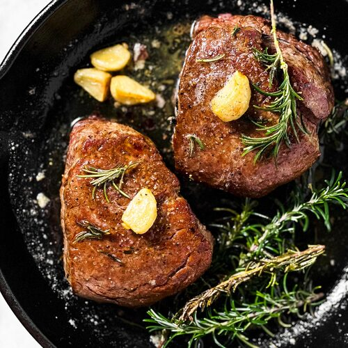

Filet Mignon

Description
Filet Mignon is a luxurious and elegant cut of beef that's perfect
for a special occasion or a romantic dinner for two.
This tender and juicy steak is pan-seared and seasoned with just
a few simple ingredients to let the natural flavor of the meat
shine through. It's served with a side of roasted vegetables and
a creamy mashed potato for the ultimate steakhouse experience.
Ingredients
- 2 (8 oz.) filet mignon steaks, about 1 1/2 inches thick
- 2 tbsp. olive oil
- 2 tbsp. unsalted butter
- Salt and pepper, to taste
- 2 sprigs fresh thyme
- 2 garlic cloves, smashed
- 4 small red potatoes, quartered
- 1 large carrot, cut into 1-inch pieces
- 1/2 large onion, cut into 1-inch pieces
- 1 tbsp. chopped fresh rosemary
- 2 tbsp. chopped fresh parsley
Steps
- Preheat the oven to 425°F.
-
In a large bowl, toss the potatoes, carrot, onion,
and rosemary with 1 tablespoon of olive oil.
Spread the vegetables out on a baking sheet and season them with salt and pepper.
Roast the vegetables in the oven for 25-30 minutes, or until they're tender and golden brown.
-
While the vegetables are roasting,
season the filet mignon steaks with salt and pepper on both sides.
-
Heat the remaining tablespoon of olive oil and 1
tablespoon of butter in a large skillet over high heat.
-
Once the skillet is hot, add the filet mignon steaks and
sear them for about 2-3 minutes on each side, or until they develop a nice crust.
-
Add the remaining tablespoon of butter to the skillet,
along with the thyme sprigs and smashed garlic cloves.
-
Spoon the butter and herbs over the steaks while they cook for an additional 2-3 minutes,
or until they reach the desired level of doneness.
- Remove the steaks from the skillet and let them rest for a few minutes.
-
Serve the Filet Mignon hot, with the roasted vegetables and creamy mashed potato on the side.
Garnish with chopped fresh parsley. Enjoy!